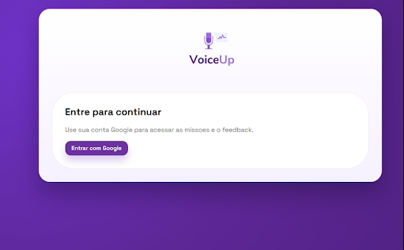
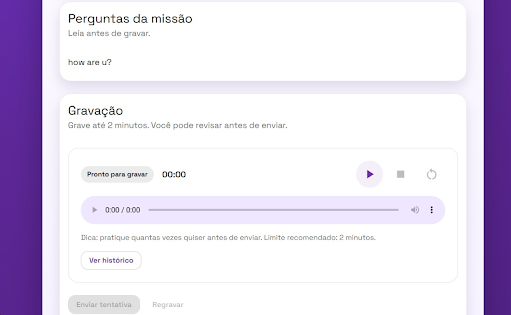
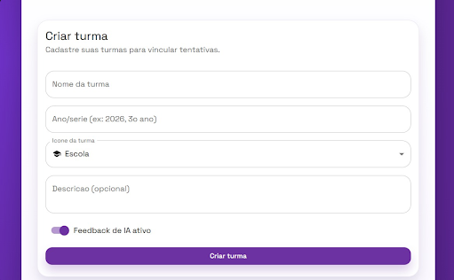

O VoiceUp é uma extensão para navegador com foco em gravação, prática e evolução da comunicação.
Uma extensão pensada para treinar comunicação, capturar áudio e acompanhar evolução com consistência.
Rotinas objetivas para dicção, leitura em voz alta, projeção e fluidez verbal.
O fluxo do produto foi pensado para automatizar gravações, organizar tentativas e apoiar avaliação.
Use a extensão diretamente no navegador em qualquer computador, com fluxo rápido e prático.
O acompanhamento contínuo ajuda a perceber progresso real ao longo das sessões.
A extensão centraliza treino, captura e acompanhamento em uma única experiência.
Navegue por rotas de treino focadas nas suas necessidades de comunicação.
Grave sua fala e organize a avaliação com uma visão clara do desempenho vocal.
A proposta é manter a jornada no navegador consistente, clara e simples de usar.
Desafios e exercícios sustentam a rotina de prática e ajudam a manter constância.
Em poucos passos, comece a usar a extensão como parte do seu treino.
Baixe a extensão oficial direto da branch LandingPage no GitHub.
Leia o texto diagnóstico para registrar uma primeira referência de voz.
Siga as lições recomendadas e faça sessões curtas com regularidade.
Monitore os resultados e ganhe confiança para falar em público.
Veja telas reais da extensão em uso.



Faça o download do pacote ZIP oficial para instalar no Chrome.